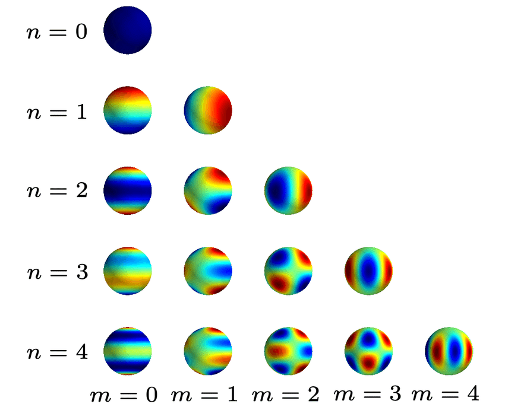

Sample Math Latex Code
This is experimental page. All contents are garbage.

Set of spherical harmonics mapped to the surface of a sphere
When rendering 3D scenes using Gaussian splats, each point (or “splat”) needs to represent not just color, but how that color changes depending on the viewing direction. Spherical harmonics allow encoding this angular variation compactly.
This is important for achieving photorealistic rendering with effects like:
- Specular highlights
- Soft shadows
- View-dependent lighting changes
🔸 What Are Spherical Harmonics?
Spherical Harmonics (SH) are a series of orthogonal basis functions defined on the surface of a sphere. You can think of them as the 3D analog of Fourier series for functions on a sphere.
They are indexed by:
- Degree (l): controls the frequency (higher means more detail)
- Order (m): varies from
-lto+l
Example Levels:
- SH level 0 (SH0): Only constant color (no view dependence)
- SH level 1 (SH1): Basic directional lighting (like Lambertian)
- SH level 2 or 3+: Captures more complex angular dependencies
🔸 SH in Gaussian Splatting
Each 3D Gaussian stores:
- Position, scale, rotation, opacity
- Spherical Harmonics coefficients for RGB appearance
Instead of storing just a single RGB color, we store a set of SH coefficients per color channel. When rendering:
- Compute the viewing direction
vfor each Gaussian. - Evaluate the SH basis functions at direction
vto get a vectorSH_basis(v). - Compute the final color as a dot product:
Where:
- \(C(v)\) : The final color for the viewing direction \(v\).
- \(c_{l,m}\): The SH coefficients for each degree \(l\) and order \(m\).
- \(Y_{l,m}(v)\): The SH basis functions evaluated at the direction \(v\).
🔸 Key Spherical Harmonics Equations
SH Basis Functions
The real-valued spherical harmonics basis functions are defined as:
\[Y_{l}^{m}(\theta, \phi) = N_{l}^{m} \cdot P_{l}^{m}(\cos\theta) \cdot \begin{cases} \sqrt{2} \sin(|m|\phi) & \text{if } m < 0 \\ 1 & \text{if } m = 0 \\ \sqrt{2} \cos(m\phi) & \text{if } m > 0 \end{cases}\]Where:
- \(\theta\) : inclination (angle from the z-axis)
- \(\phi\): azimuth (angle from the x-axis in the x-y plane)
- \(N_{l}^{m}\): normalization constant
- \(P_{l}^{m}\): associated Legendre polynomial
Normalization Constant
\[N_{l}^{m} = \sqrt{\frac{(2l+1)}{4\pi} \cdot \frac{(l - |m|)!}{(l + |m|)!}}\]Example: SH0 and SH1
-
SH0 (l=0, m=0): \(Y_0^0 = \frac{1}{2} \sqrt{\frac{1}{\pi}}\)
- SH1 (l=1, m=-1,0,1):
\(Y_1^{-1} = \sqrt{\frac{3}{4\pi}} \sin\theta \sin\phi\)
\(Y_1^{0} = \sqrt{\frac{3}{4\pi}} \cos\theta\)
\(Y_1^{1} = \sqrt{\frac{3}{4\pi}} \sin\theta \cos\phi\)
🔸 Benefits of Using SH
- Compact representation of angular variation.
- Efficient evaluation during rendering.
- Scalable to higher levels for more detail.